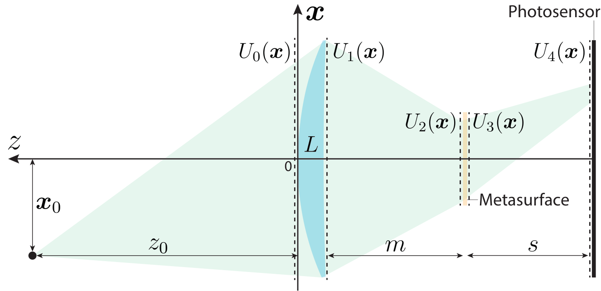
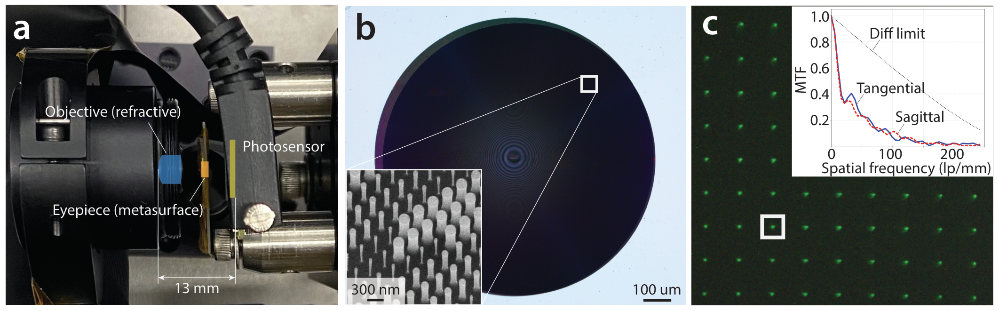
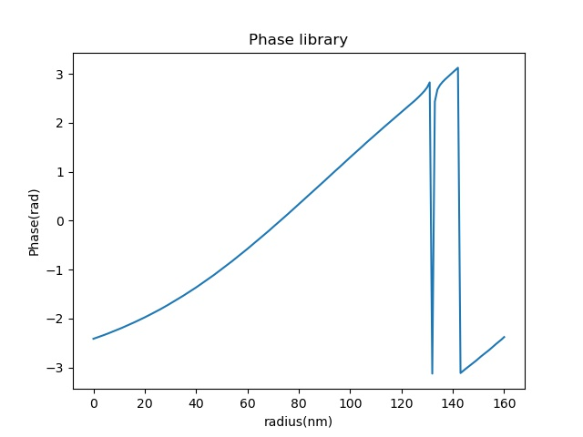
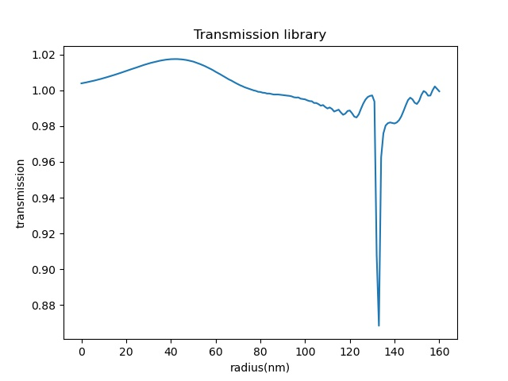
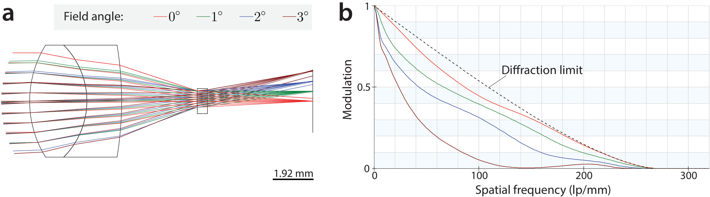
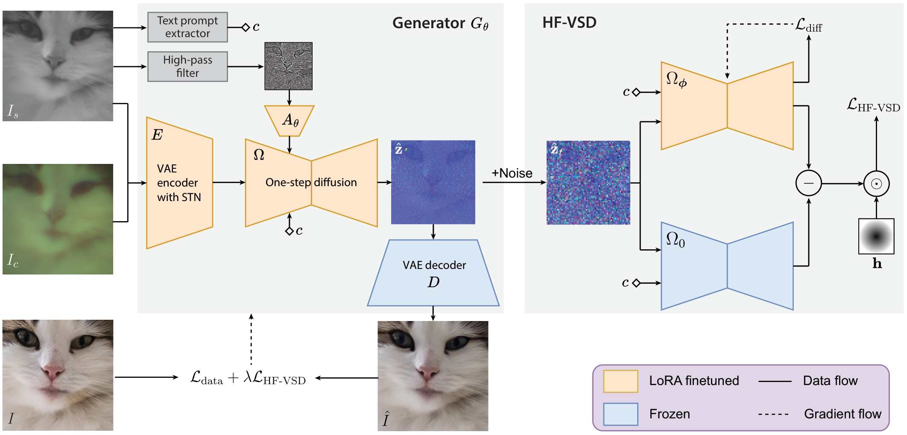
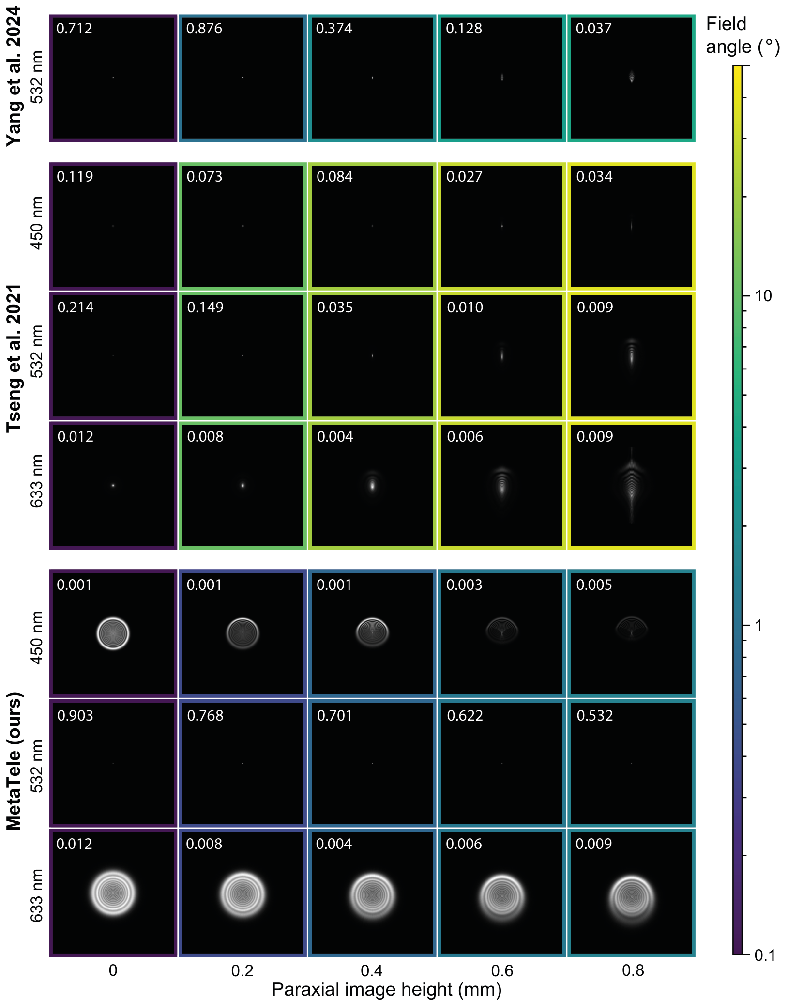
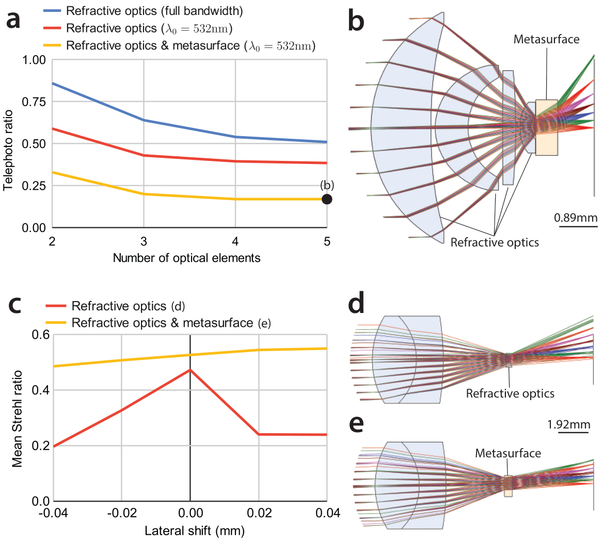
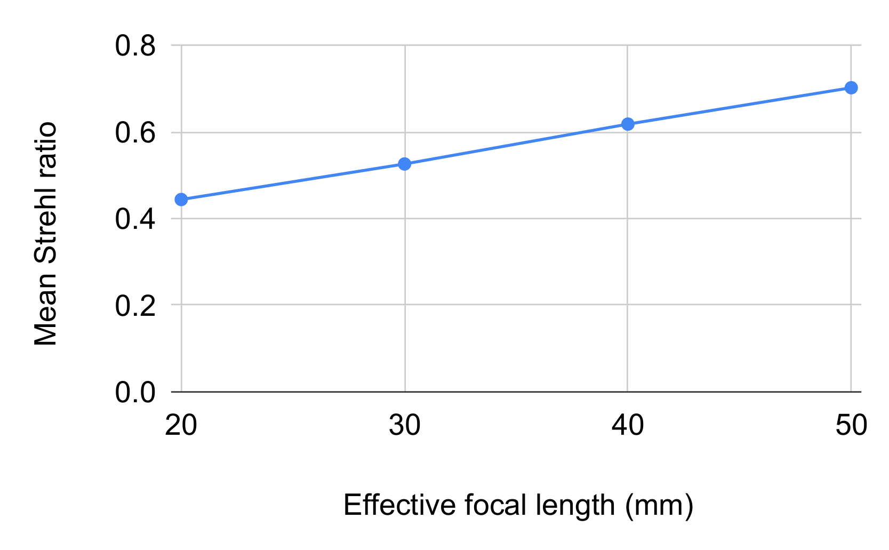

† Co-first authors with equal contribution
1Elmore Family School of Electrical and Computer Engineering, Purdue University 2Samsung Research America
TL;DR — a metasurface + lens system that fits telephoto in a smartphone body, with a diffusion model doing the color reconstruction.
A Galilean-telescope assembly: a refractive objective paired with a custom-designed metasurface eyepiece.

Optical model. MetaTele consists of a refractive objective lens (L) and a metasurface eyepiece (M) separated by distance m. The assembly magnifies the incident angle of incoming light waves, achieving telephoto compactness.
The metasurface is composed of Silicon Nitride (SiN) cylindrical nanopillars on a 300 nm × 300 nm grid, with a fixed height of 775 nm. The nanopillar radius uniquely determines the phase modulation at each nanocell, following a quadratic phase profile that acts as a diverging lens (focal length f = −2 mm). This design achieves near-diffraction-limited performance at 532 nm and provides higher tolerance to fabrication imperfections compared to purely refractive alternatives.
Structure image Is: Captured with a 10 nm FWHM bandpass filter at 532 nm. Exploits the metasurface's design wavelength to achieve high spatial fidelity and near-diffraction-limited sharpness — but is monochrome.
Color cue Ic: Captured without the filter over the full visible spectrum. Contains rich chromatic information but suffers from severe chromatic aberrations due to the wavelength-dependent defocus of the metasurface.

Hardware prototype. (a) The assembled MetaTele system with Thorlabs AC050-008-A-ML objective lens (f = 7.5 mm, Ø5 mm), custom metasurface eyepiece, and Basler daA3840-45uc RGB sensor — all mounted on 5-axis precision stages. (b) Optical microscope image of the fabricated metasurface. Inset: SEM image at 13,000× magnification. (c) Experimentally measured PSFs for the structure image with MTF inset.

Phase delay profile at 532 nm

Transmittance profile at 532 nm

Simulation results. (a) Ray-tracing diagram illustrating the Galilean-telescope configuration at different field angles. (b) Modulation transfer functions (MTF) for the corresponding field angles. The system achieves near-diffraction-limited performance on axis.
A one-step diffusion model fuses structure and color to produce high-quality RGB telephoto images.

Computational framework. MetaTele uses a generator Gθ built on a one-step diffusion model Ω. The architecture adopts a variational encoder-decoder with a one-step diffusion module conditioned on text prompts (from Is) and learned high-frequency feature embeddings (via adaptor network A). Training combines a data fidelity loss and the novel High-Frequency Variational Score Distillation (HF-VSD) loss.
The proposed High-Frequency Variational Score Distillation (HF-VSD) loss builds on standard VSD by applying a 2D high-pass filter in the frequency domain. This explicitly encourages the one-step diffusion model to recover fine texture details guided by the sharp structure image Is, while preserving low-frequency color information from the color cue Ic.
Encoder, decoder, and diffusion module are initialized from pre-trained Stable Diffusion weights. Only Low-Rank Adaptation (LoRA) parameters are fine-tuned, keeping computational cost low. The generator parameters θ and the HF-VSD parameters φ are updated alternately following the standard VSD framework.
Comparing no VSD, standard VSD, our HF-VSD loss, and the ground truth on a representative crop.
w/o VSD
Standard VSD
HF-VSD (Ours)
Ground Truth
Quantitative and qualitative comparisons against prior metasurface-based imaging systems.
MetaTele vs. prior metasurface-based cameras (Yang et al. 2022, Tseng et al. 2021, Pinilla et al. 2023) on simulated measurements from the Flickr2K dataset. Click a scene to compare.
| Method | PSNR ↑ | SSIM ↑ | LPIPS ↓ | DISTS ↓ | FID ↓ | NIQE ↓ | MUSIQ ↑ | MANIQA ↑ | CLIPIQA ↑ |
|---|---|---|---|---|---|---|---|---|---|
| Color cue | 13.27 | 0.383 | 0.849 | 0.527 | 372.6 | 10.63 | 17.74 | 0.171 | 0.233 |
| Yang et al. | 15.01 | 0.443 | 0.543 | 0.339 | 192.4 | 5.99 | 37.02 | 0.203 | 0.240 |
| Tseng et al. | 24.56 | 0.803 | 0.301 | 0.194 | 125.0 | 4.75 | 46.98 | 0.238 | 0.393 |
| Pinilla et al. | 24.54 | 0.707 | 0.387 | 0.211 | 163.6 | 5.23 | 35.22 | 0.209 | 0.266 |
| Ours | 21.95 | 0.629 | 0.204 | 0.140 | 108.9 | 3.98 | 61.09 | 0.375 | 0.512 |
Best 2nd 3rd

Simulated PSFs of MetaTele and prior metasurface imaging systems at identical paraxial image heights. Inset numbers show Strehl ratios. MetaTele intentionally prioritizes sharpness at the 532 nm design wavelength, achieving the highest on-design Strehl ratio and near-uniform PSFs across the full field of view.

Simulation study. (a) Minimum telephoto ratios vs. number of optical elements under three scenarios: full-spectrum refractive, single-wavelength refractive, and hybrid refractive+metasurface. (b) Optimized assembly with 4 lenses + metasurface reaching telephoto ratio 0.17. (c) Optical performance vs. lateral perturbation: the hybrid system maintains high Strehl ratio even when the eyepiece is displaced by 0.02 mm, while the purely refractive counterpart degrades sharply.

MetaTele supports continuous zoom from 20 to 50 mm equivalent focal length by adjusting the separation between the objective and metasurface eyepiece, all without changing lenses.
If you find this work useful, please cite:
@misc{weligampola2025metatele,
title = {MetaTele: Compact Refractive Metasurface Computational Telephoto Camera},
author = {Weligampola, Harshana and Chen, Yuanrui and Gnanasambandam, Abhiram
and Godaliyadda, Dilshan and Sheikh, Hamid R. and Chan, Stanley H.
and Guo, Qi},
year = {2025},
eprint = {2604.07614},
archivePrefix = {arXiv},
primaryClass = {eess.IV},
url = {https://arxiv.org/abs/2604.07614}
}